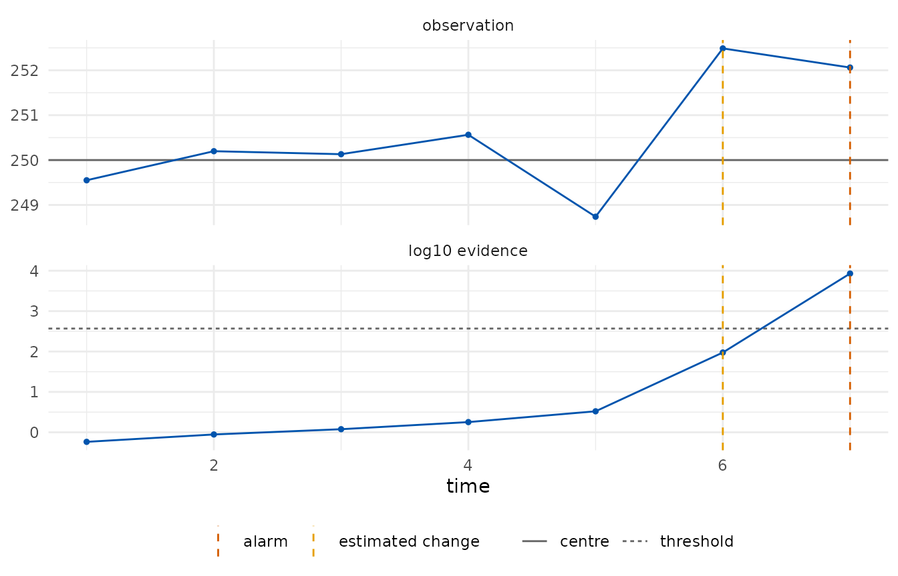
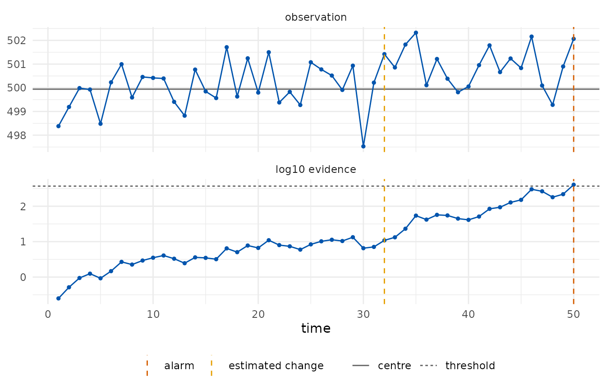

What an e-detector is
A control chart watches a stream of observations and raises an alarm when the process seems to have changed. The classical charts (Shewhart, CUSUM, EWMA) are calibrated under a model for the in-control process, usually Gaussian, and their false-alarm rate is only as good as that model.
An e-detector (Shin, Ramdas and Rinaldo, 2024) replaces the model by a class: everything the user is willing to assume about the process before the change, for example “observations lie in [495, 505] and their mean is 500”, or “observations have mean 250 and sub-Gaussian tails with scale 0.67”. For every distribution in the class, the expected time to a false alarm is at least the target average run length (ARL). The detector accumulates e-values, bets against the pre-change class, started at every time point; the Shiryaev–Roberts type sums them, the CUSUM type keeps the largest, and the alarm is raised when the accumulated evidence reaches the ARL.
The price of the guarantee is paid in detection delay: the detector cannot know the size of the change, so it bets on a mixture of shifts.
The examples use the industrial datasets of the shewhartr package, so that the two packages can be compared on the same data.
A process with a declared centre and scale
Tablet weights are recorded in subgroups of five, with a target of 250 mg and a process standard deviation of 1.5 mg. A shift of 1.5 mg is embedded from subgroup 18. We monitor the subgroup means, whose scale is , with the first twelve subgroups serving as Phase I.
tablets <- aggregate(weight ~ subgroup, shewhartr::tablet_weight, mean)
head(tablets, 3)
#> subgroup weight
#> 1 1 250.6670
#> 2 2 250.0480
#> 3 3 250.2758
design <- edetect_design(arl = 370, class = "subgaussian", center = 250,
sigma = 1.5 / sqrt(5), direction = "both")
design
#>
#> ── e-detector design ───────────────────────────────────────────────────────────
#> Pre-change class: "subgaussian"; centre 250 (declared)
#> Sub-Gaussian scale: 0.6708
#> Direction: "both"; type: "sr"; target ARL 370 (threshold 370 on the e-detector
#> scale)
#> Mixture over 12 shifts: 0.168, 0.335, 0.671, 1.01, 1.34, 2.01, -0.168, -0.335,
#> -0.671, -1.01, -1.34, -2.01
chart <- edetect_update(edetect_init(design), tablets$weight[13:25])
#> Warning: Alarm at t = 7; 6 later observations were not consumed.
chart
#>
#> ── e-detector chart ────────────────────────────────────────────────────────────
#> "subgaussian" class, centre 250 (declared), direction "both", type "sr", target
#> ARL 370
#> ✖ Alarm at t = 7 (evidence 8510 >= 370); estimated change at t = 6.The detector stopped at its seventh Phase II subgroup (subgroup 19) and the observations after it were not consumed, which a warning reports. Its estimate of the change point is the sixth Phase II subgroup, that is subgroup 18, where the shift was embedded.
edetect_alarm(chart)
#> # A tibble: 1 × 6
#> alarm alarm_time evidence threshold change_estimate n_observed
#> <lgl> <int> <dbl> <dbl> <int> <int>
#> 1 TRUE 7 8509. 370 6 7
autoplot(chart)
edetect_report() lists what was assumed, how the
detector was built and what happened; tidy() returns the
trajectory, one row per observation.
edetect_report(chart)
#>
#> ── e-detector report ───────────────────────────────────────────────────────────
#> Class "subgaussian", centre 250 (declared); direction "both"; type "sr"; target
#> ARL 370.
#> Observations: 7. Maximum evidence 8510 against a threshold of 370.
#> ✖ Alarm at t = 7 (evidence 8510); estimated change at t = 6.
#>
#> ── Assumptions ──
#>
#> • Pre-change observations have mean equal to 250 and sub-Gaussian tails with
#> scale 0.6708.
#> • The centre was declared by the user.
#> • Observations arrive in time order and none was dropped or imputed.
#> • Under these assumptions the expected time to a false alarm is at least 370,
#> and the probability of a false alarm by any time t is at most t/370.
#> edetect 0.1.0, R version 4.6.1 (2026-06-24)
tidy(chart)
#> # A tibble: 7 × 9
#> t x n log_evalue evidence evidence_cusum threshold change_estimate
#> <int> <dbl> <dbl> <dbl> <dbl> <dbl> <dbl> <int>
#> 1 1 250. 1 -0.543 0.581 0.581 370 1
#> 2 2 250. 1 -0.684 0.884 0.538 370 2
#> 3 3 250. 1 -0.702 1.19 0.503 370 2
#> 4 4 251. 1 -0.444 1.79 0.648 370 4
#> 5 5 249. 1 0.663 3.31 1.97 370 5
#> 6 6 252. 1 4.51 94.4 91.2 370 6
#> 7 7 252. 1 2.94 8509. 8453. 370 6
#> # ℹ 1 more variable: alarm <lgl>Phase I estimation and a slow drift
Fill volumes of a bottling line have a target of 500 ml. A linear drift begins around observation 65. Here the centre and the scale are estimated from the first fifty observations and recorded as an assumption of the chart.
ml <- shewhartr::bottle_fill$ml
design <- edetect_design(arl = 370, class = "subgaussian", phase1 = ml[1:50],
direction = "up")
design
#>
#> ── e-detector design ───────────────────────────────────────────────────────────
#> Pre-change class: "subgaussian"; centre 499.9 (phase1, n = 50)
#> Sub-Gaussian scale: 1.378
#> Direction: "up"; type: "sr"; target ARL 370 (threshold 370 on the e-detector
#> scale)
#> Mixture over 6 shifts: 0.344, 0.689, 1.38, 2.07, 2.76, 4.13
chart <- edetect_update(edetect_init(design), ml[51:100])
edetect_alarm(chart)
#> # A tibble: 1 × 6
#> alarm alarm_time evidence threshold change_estimate n_observed
#> <lgl> <int> <dbl> <dbl> <int> <int>
#> 1 TRUE 50 405. 370 32 50
autoplot(chart)
A slow drift is a hard case for any detector: the mean moves by a fraction of the scale per observation, so the evidence builds slowly. The alarm came at the last observation and the change point is estimated at observation 82, well after the drift began; a Phase I of fifty observations also leaves the centre and the scale with sampling error, which the report records.
The bounded class makes a weaker assumption: fill volumes are known to lie in [495, 505] and nothing is assumed about their tails. The betting e-values on that class are slower than the sub-Gaussian ones but hold for any distribution on the interval.
design_b <- edetect_design(arl = 370, class = "bounded", bounds = c(495, 505),
phase1 = ml[1:50], direction = "up")
edetect_alarm(edetect_update(edetect_init(design_b), ml[51:100]))
#> # A tibble: 1 × 6
#> alarm alarm_time evidence threshold change_estimate n_observed
#> <lgl> <int> <dbl> <dbl> <int> <int>
#> 1 FALSE NA 291. 370 6 50Where to go next
- Attribute charts: p, c and u charts on counts.
- Regression chart: monitoring residuals of a Phase I model when the process is not stationary.
- Run lengths and delays: checking the guarantee and measuring the delay of a design before monitoring.